In the treatment of metastatic non‑small cell lung cancer (NSCLC),
What's keeping survival out
of balance?
Despite therapeutic advances, oncologists continue to face the imbalance between additional toxicities from systemic treatments and extended survival in patients with metastatic NSCLC.1,2,*
As metastatic NSCLC progresses, there remains a gap in the ability to extend survival without adding systemic treatment toxicities


Consequences for patients
Treatment options for metastatic NSCLC are currently limited to biochemical systemic modalities that may result in limited median overall survival, especially in later lines of treatment.3,4
Treatment choice may be complicated by:
The burden of toxicities from current systemic therapies6,7
Patient's age and fitness for the continuation of treatment8,9

Approximately half of patients treated for metastatic NSCLC experience a decline in physical functioning, which interferes with daily activities and overall well-being.10,§


Moreover, studies in NSCLC that measure impact of chemotherapy regimens on tolerability and quality of life typically do not include toxicity-related patient discontinuation rates, which may exceed 30% among patients who receive combination therapies.12,13
We need to consider
novel modalities that target tumor behaviors in innovative ways in
order to extend survival without added systemic toxicities
Sign up for updates and information
*Indicates required field.